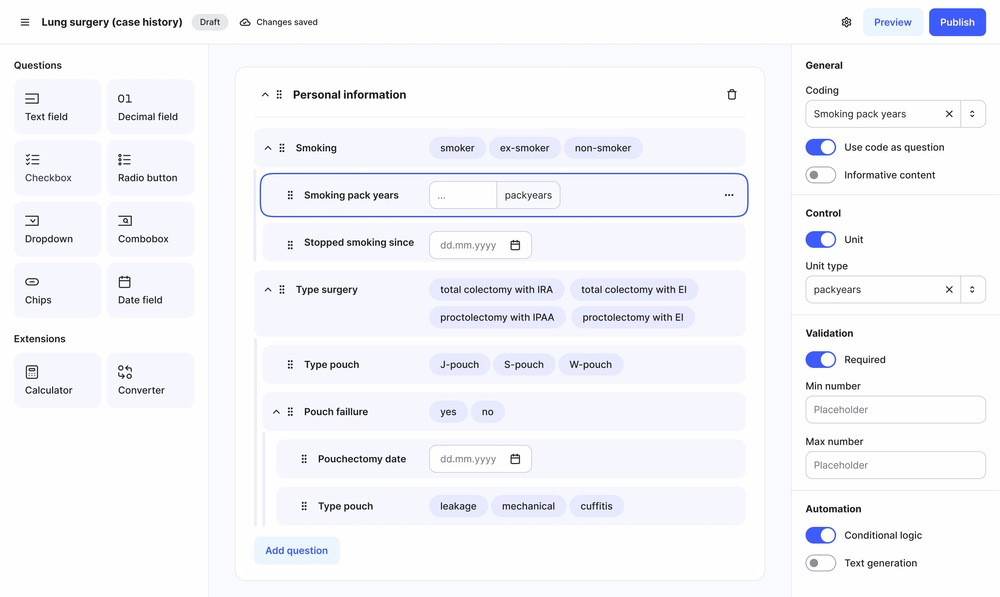
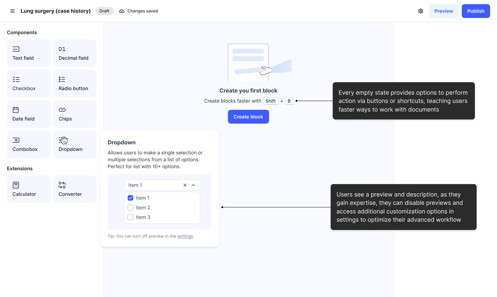
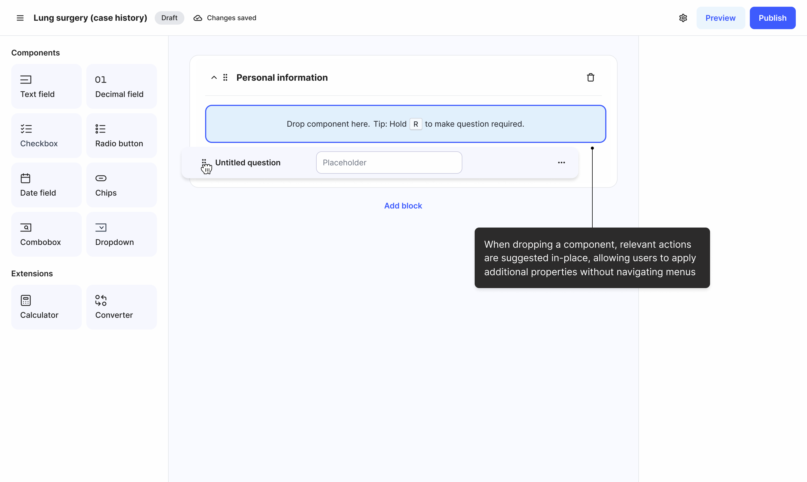
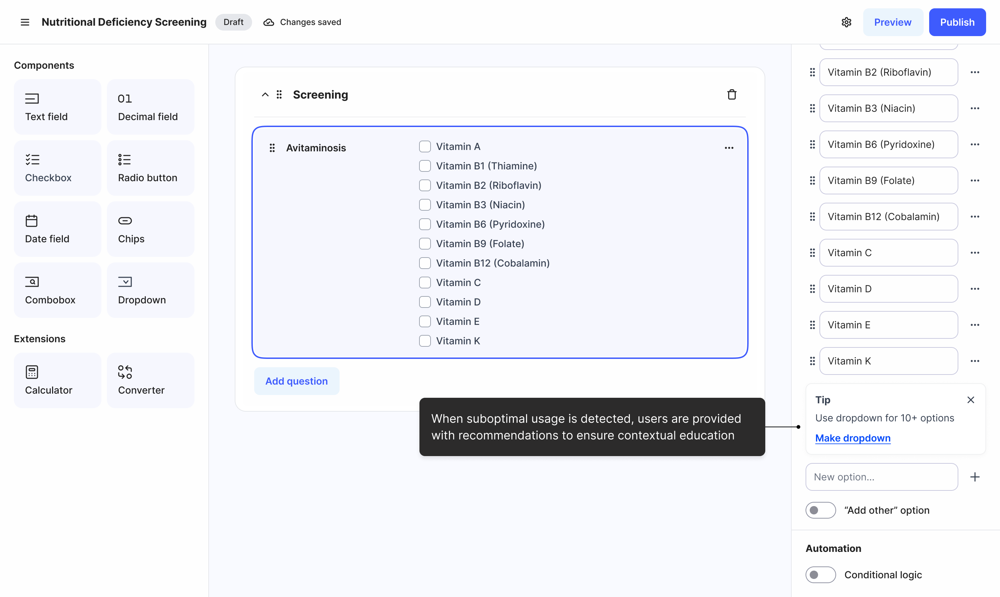
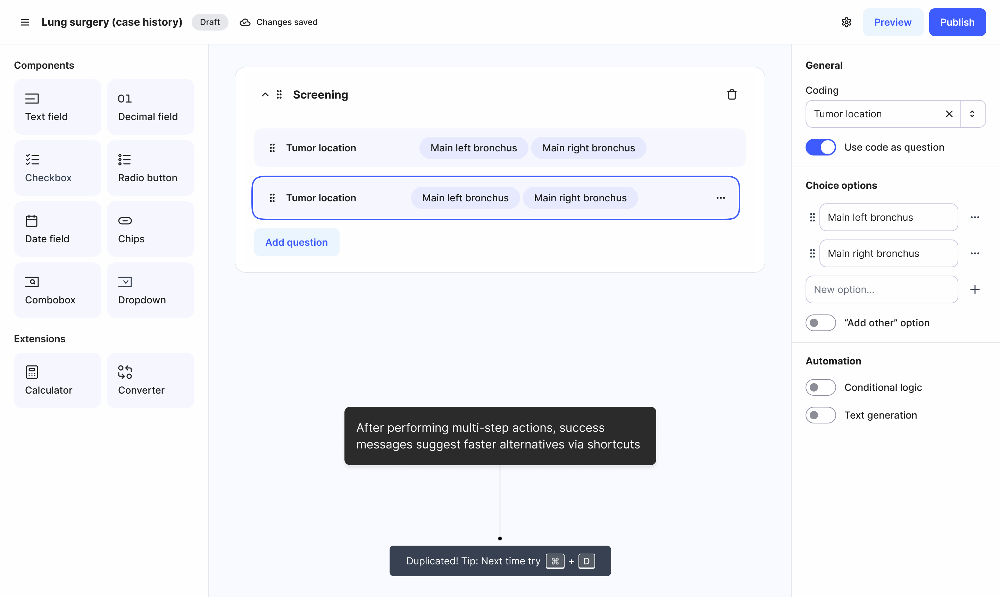
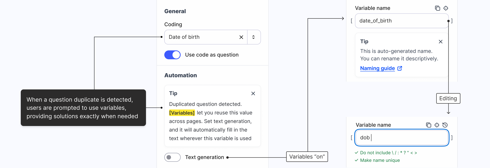
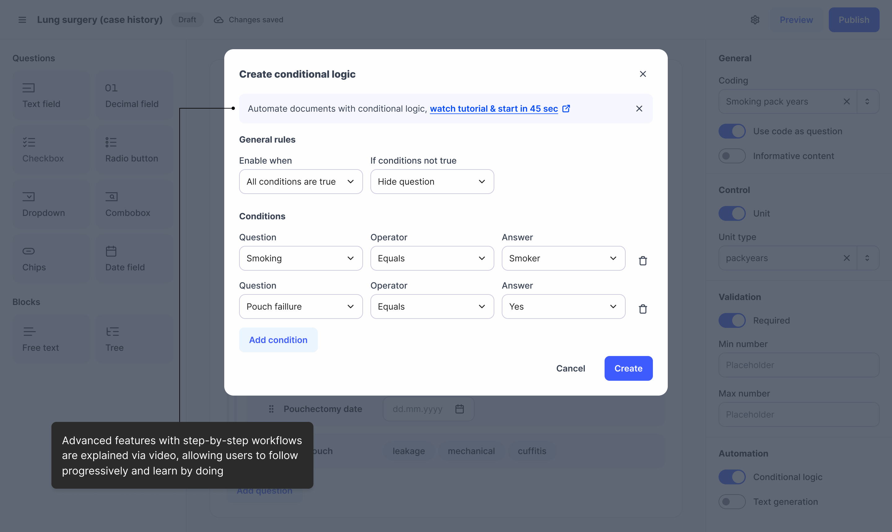
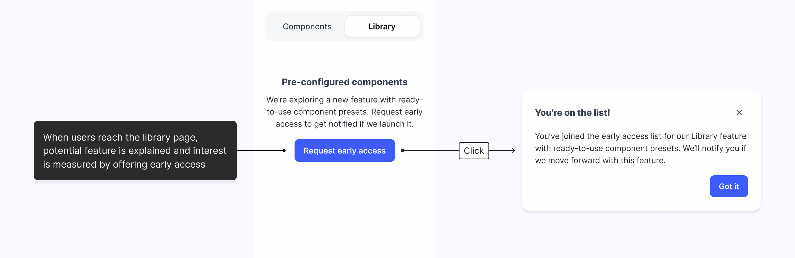

Medical document builder: from 0 to $1.11M

TL;DR
- I designed a medical document builder with progressive onboarding, achieving 38% better time on task than competitors, and 93% binary CSAT.
- An intuitive design helped us sign 20+ clients, including Azorg, UZ Brussel, AZ Turnhout, and others. Additionally, within 6 months, we raised $1.11M.

“TechMagic has been a great partner — helping with both UX design and development, and showing real flexibility when product insights or priorities changed.”
Axel Vanraes, CTO at Tiro.health
Context
Tiro.health is a healthtech company with a digital medical management product. Our team worked on its document builder.
The main goal was to create a SaaS B2B product that lets medical workers quickly create flexible medical documents.
Research
We interviewed subject-matter experts, analysed competitors, and ran usability sessions on competitor products, surfacing real workflow frictions.
Onboarding gap
Most users never discovered the full capabilities of document builders. Competitor tools lacked progressive onboarding, so functionality was technically available but practically invisible. As a result, clinicians invented their own workarounds instead of using built-in features, which caused low CSAT.
The speed problem
Clinicians work under severe time constraints. Documentation happens between patient interactions, so every extra minute compounds frustration. As one user put it: “I don’t have time to go through all these menus.”
Metrics
We distilled the insights into two primary HMWs, then linked each to a metric that defined what success would look like.
Time on task
HMW help clinicians complete documents in fewer steps, speeding up their workflow?
CSAT
HMW introduce progressive onboarding that helps clinicians discover product capabilities contextually, improving their satisfaction?
Design
I designed the document builder end-to-end, with decisions focused on two objectives: helping users discover the system progressively, and helping them work faster within it.






Live experiments
One idea was a preconfigured component library to speed up creation. It would have cost significant time to build, so we ran a fake-door test to validate the high-effort feature in real context before building it.

Impact
- 38% better time on task than competitors, and 93% binary CSAT
- 20+ clients, including Azorg, UZ Brussel, AZ Turnhout, and others
- $1.11M raised within 6 months
“Thanks to Tiro.health, all Belgian vascular surgeons can participate in our registry”
Dr. Fourneau, B2b customer at UZ Leuven
Reflection
Working on this project was a valuable opportunity to explore a complex B2B problem space. Designing a flexible system that clinicians could use quickly, often between patient interactions, pushed me to think carefully about both discoverability and speed. It was especially rewarding to see how progressive onboarding and contextual guidance helped users uncover functionality that would otherwise remain hidden.
For now, this project stands as an important milestone for me. It brought together research, system thinking, and showed how thoughtful interaction design can make complex tools feel more approachable.
Simplifying document building with AI-powered features
This case study shows part of the work — for a full walkthrough or questions, contact Sviatoslav Nytka.